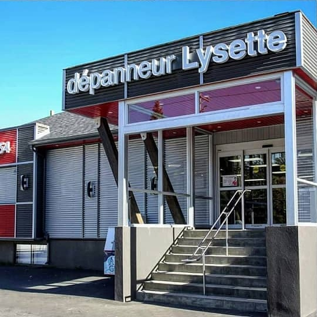
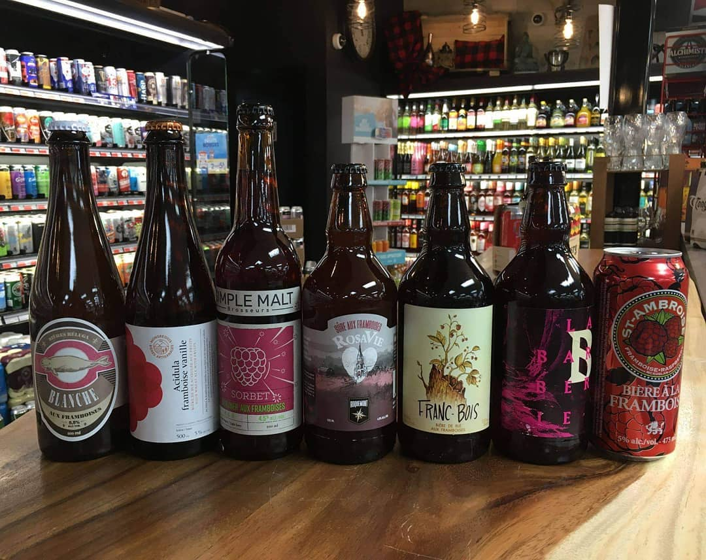
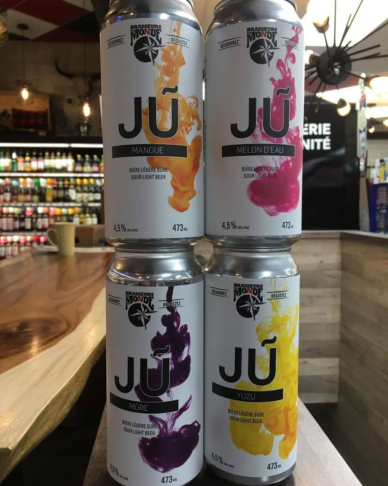
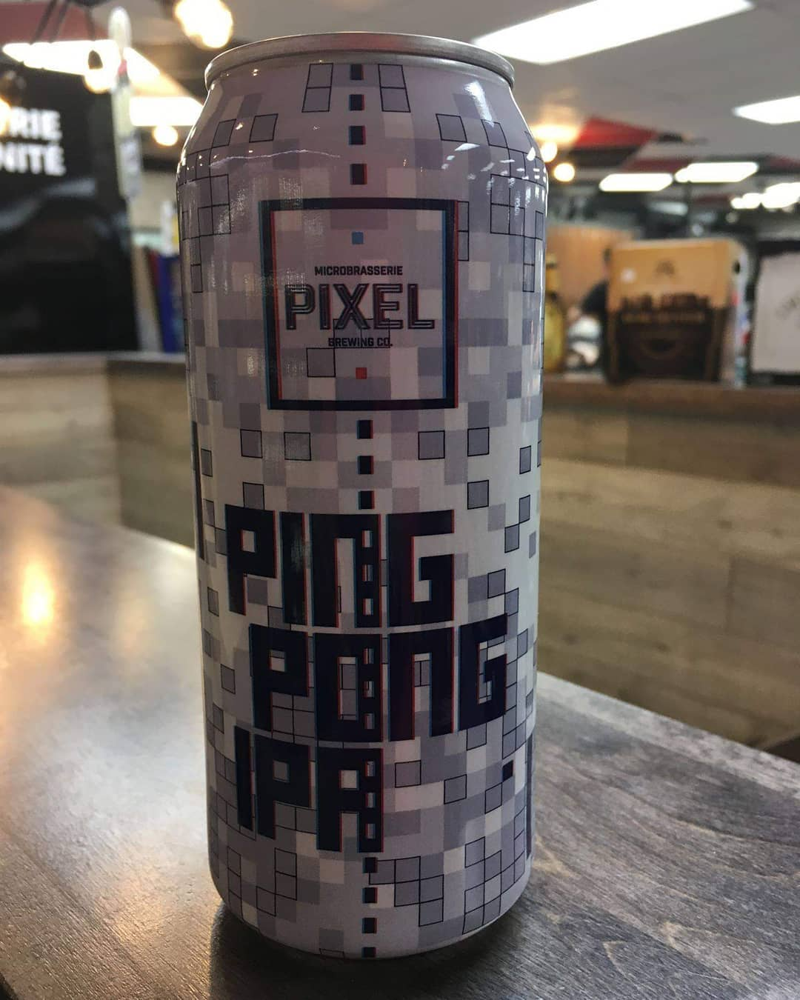

Dépanneur Lysette, c'est les essentiels de tous les jours — et la plus grande sélection de bières de microbrasserie du coin, choisie avec soin.

Le Castor, Brasseurs du Monde, Pixel Brewing et des dizaines d'autres — la rotation change constamment, alors il y a toujours une nouvelle canette à découvrir.



Une bière de microbrasserie choisie chaque semaine, pas juste les mêmes marques que partout ailleurs.
Au 354 des Ruisseaux, en plein cœur du quartier — les essentiels à deux pas de chez vous.
Un décor chaleureux, boisé, pensé pour donner envie de flâner devant les tablettes.